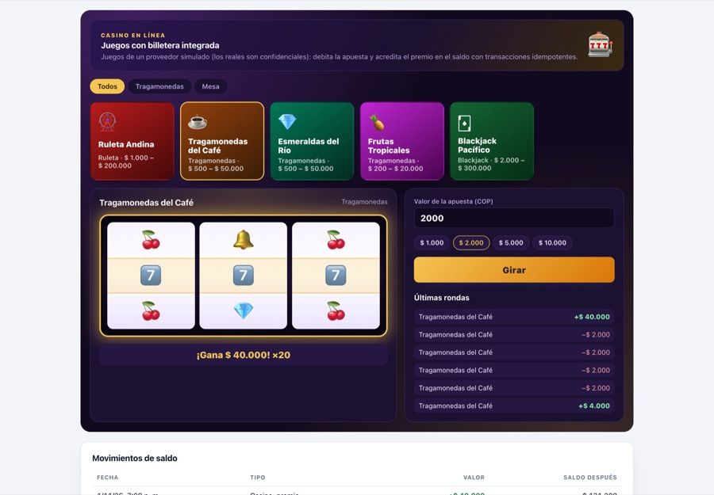
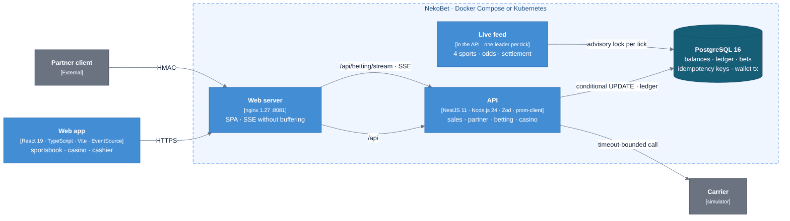
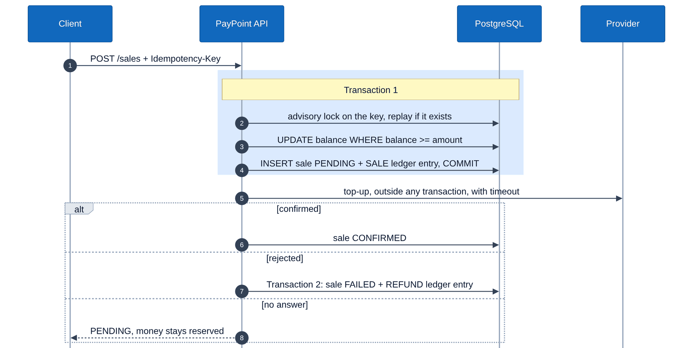

El problema
Las tiendas tienen un solo saldo prepagado para apuestas, casino y recargas. Dos ventas pueden gastar el mismo saldo, un reintento puede cobrar dos veces, las cuotas cambian mientras el cajero decide, el proveedor de juegos reintenta o revierte llamadas y el operador puede no responder.
Lo que construí
- Apuestas en tiempo real de fútbol, baloncesto, béisbol y hockey: resultados, doble oportunidad, totales y ambos marcan, con prórrogas y entradas extra, y una página por partido.
- Apuestas rechazadas si la cuota cambió; cada mercado se liquida con el marcador final y se paga una sola vez.
- Un casino con billetera seamless, callbacks idempotentes y registro de reversos anticipados; tragamonedas cuyos rodillos muestran el resultado del proveedor.
- Verificación y débito en un UPDATE condicional, Idempotency-Key obligatoria, libro contable de solo inserción y una API de aliados con HMAC-SHA256 y lista blanca de IP.



Cómo está hecho


- Frontend
- React 19
- TypeScript
- Vite 8
- EventSource (SSE)
- SVG live tracker
- Backend
- Node.js 24
- NestJS 11
- Zod 4
- JWT
- HMAC-SHA256
- Server-Sent Events
- Datos
- PostgreSQL 16
- plain SQL
- advisory locks
- append-only ledger
- Infraestructura y DevOps
- Docker multi-stage
- nginx
- GHCR multi-arch images
- Kubernetes
- Argo CD (in OpsCircuit)
- CI/CD y calidad
- GitHub Actions
- Jest
- Supertest
- 69 tests
- Dependabot
- Seguridad
- CodeQL
- Gitleaks
- npm audit
- Trivy
- OWASP ZAP (DAST)
- SBOM + SLSA provenance
- cosign signing
- Content-Security-Policy
- Helmet
- IP allowlist
- login lockout
- Observabilidad
- Prometheus metrics (prom-client)
Decisiones y concesiones
El proveedor se llama fuera de la transacción
Mantener el bloqueo de la fila del saldo durante una llamada de red pondría en cola todas las demás ventas de la tienda. La venta se confirma como PENDING con el dinero reservado y luego se llama al proveedor.
Un timeout no es un fallo
Si el operador no responde, la recarga pudo haberse hecho. Reembolsar a ciegas podría regalar el producto, así que la venta queda en PENDING. El proceso de conciliación que la resuelve es el siguiente paso documentado.
HMAC sobre el hash del cuerpo
Los aliados firman la marca de tiempo, el método, la ruta y el hash del cuerpo; el servidor compara en tiempo constante dentro de una ventana de 5 minutos. Integridad y autenticidad sin enviar el secreto.
Cómo se comprobó
| Pruebas unitarias y de integración | 69 aprobadas en CI |
|---|---|
| Apuestas y casino | Rechazo por cambio de cuota, cada mercado liquidado una vez, reintentos de billetera |
| Experimento de concurrencia | Versión ingenua 70, UPDATE condicional 50 (local, no es un benchmark) |
| Análisis estático, secretos y dependencias | CodeQL, Gitleaks y npm audit en verde |
| Cadena de suministro | Controles de Trivy y ZAP; imágenes con SBOM y procedencia, firmadas con cosign |
| Evaluación de seguridad | Una venta de un integrador repetida se cobraba dos veces: encontrado, corregido y probado en CI |
- 69 pruebas automatizadas; imágenes multiarquitectura publicadas tras el CI
- Experimento local: 70 ventas simultáneas, saldo para 50, exactamente 50 aprobadas
- 70 reintentos simultáneos de una llave crean una sola venta
Alcance y próximos pasos
- La conciliación de ventas en PENDING aún no está implementada.
- Los secretos HMAC se guardan en texto plano; en producción irían en un gestor de secretos.
- El operador, el feed de cuotas y el proveedor de juegos son simulados porque las plataformas de producción y sus datos son confidenciales. Las apuestas son una demostración, no un servicio con licencia (en Colombia se requiere licencia de Coljuegos).